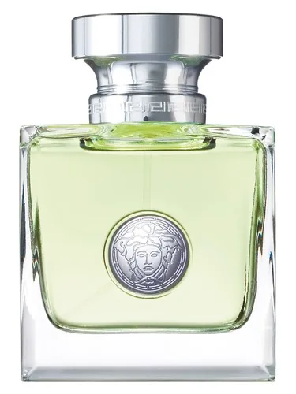

Versense
- Para mujer
- Familia cítrica
- Lanzado en 2009
Con caja$1,850Te lo conseguimos en 2 días a 1 semanaSin caja$850Te lo conseguimos en 2 días a 1 semana
No disponible: te lo conseguimos en 2 días a 1 semana
Cómo huele
Cítrico
Amaderado
Especiado fresco
Aromático
Floral blanco
Sus notas
Salida
bergamotacítricosmandarina verdehigopera
Corazón
cardamomoliriojazmínnarciso
Fondo
cedro de Virginiaalmizcleolivosándalo
Versense de Versace es un perfume cítrico para mujer, lanzado en 2009. Abre con bergamota y cítricos, en el corazón tiene cardamomo y lirio y deja un fondo de cedro de Virginia y almizcle. Lo que más se siente: cítrico, amaderado y especiado fresco.